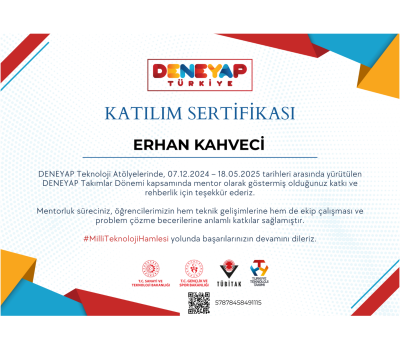

Deneyap Türkiye – Proje Mentörlüğü
Deneyap Türkiye programında proje mentörü olarak gençlerin gelişimine katkı sağladım.
Bilgisayar Mühendisliği Öğrencisi • Sistem & Yazılım • Blue Team
Merhaba, ben Erhan Kahveci, Atatürk Üniversitesi Bilgisayar Mühendisliği 4. sınıf öğrencisiyim. Eğitimim boyunca programlama dilleri (C++, Python, MATLAB, Java), veri tabanı yönetimi (SQL, SQLite), web ve mobil uygulama geliştirme (ASP.NET, Flutter) ile kullanıcı arayüzü tasarımı (Figma) konularında deneyim kazandım. Ayrıca GNU/Linux işletim sistemleri, komut satırı betik yazımı ve paralel programlama alanlarında da derinlemesine bilgi sahibiyim. Deneyap Türkiye’de mentörlük yaparak liderlik ve takım çalışması becerilerimi geliştirdim. TEKNOFEST gibi önemli etkinliklerde takım kaptanlığı ve proje yönetimi tecrübeleri edindim. Ayrıca Tivibu'da yazılım test stajyeri olarak çalışma fırsatı buldum. Teknoloji alanında yenilikçi çözümler üretmek ve kendimi sürekli geliştirmek hedefiyle kariyerime yön veriyorum.